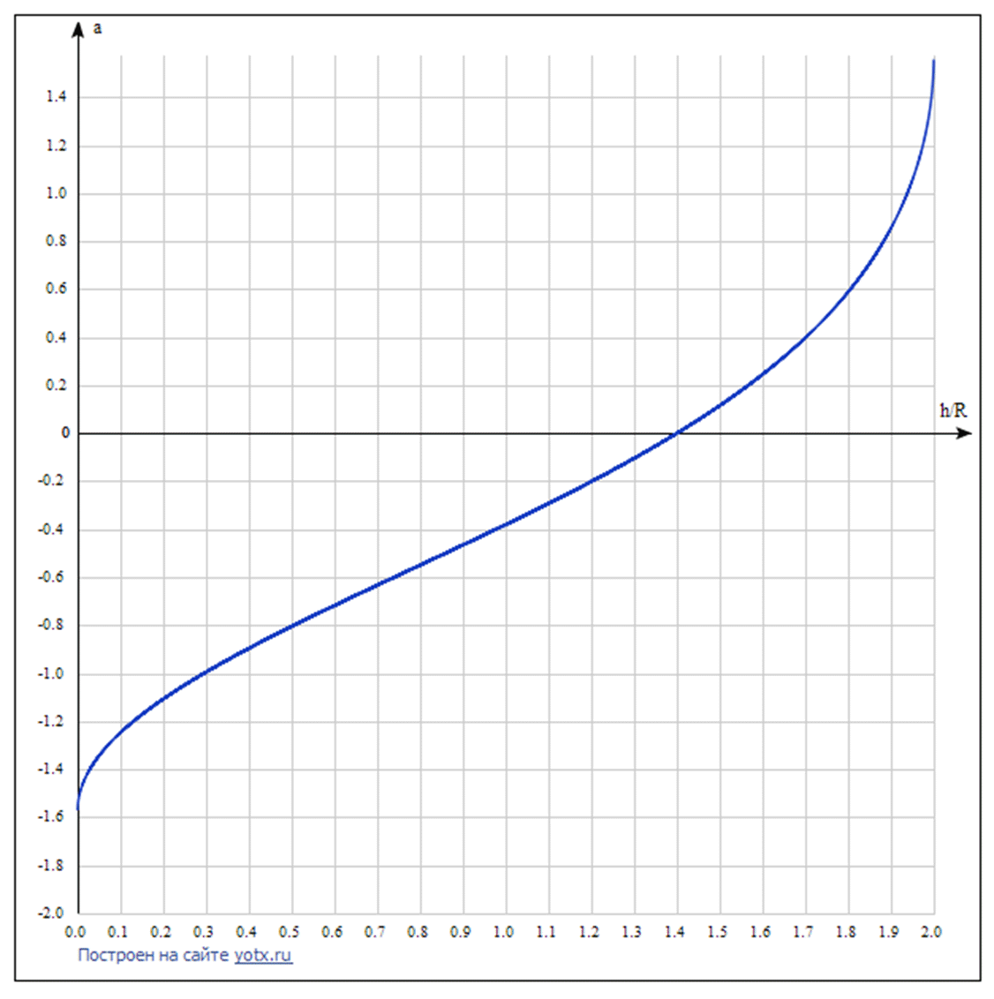
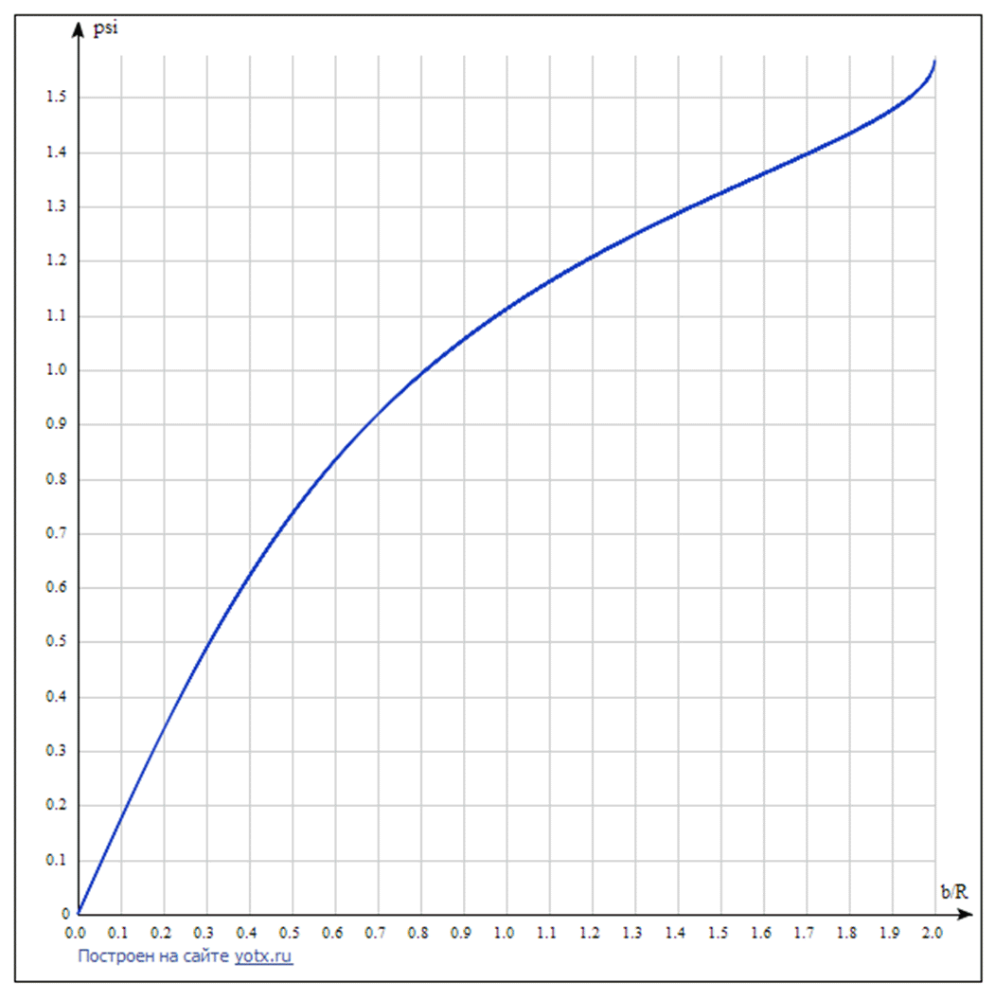

X20 (2020) — English translation
The horizontal impulse imparted to the ball is equal to $\cos\alpha\int F(t) dt=mv$, where $F$ is the impact force. On the other hand, the reported angular momentum about the center of mass is $$ \frac{2}{5} m R^{2} \omega=\left((h-R) \cos \alpha-\sqrt{R^{2}-(h-R)^{2}} \sin \alpha\right) \int F(t) dt $$ In the case of отсутствия проскальзывания $v=\omega R$, так что we have соratio $$ \frac{2}{5}=\frac{h-R}{R}-\sqrt{1-\frac{(h-R)^{2}}{R^{2}}} \operatorname{tg} \alpha $$

The force acting between the balls is directed at their point of contact along the line connecting the centers at the moment of contact, that is, at an angle $\phi=\arcsin \frac{b}{2 R}$ to the direction of movement. It follows that the speed imparted to the second ball is also directed along this straight line. Then the ZSI together with the ZSE are given for the speeds of the balls: cue ball: $$\vec{v}_{c}=\left(\begin{array}{c}-v \sin \phi \cos \phi \\ v \sin ^{2} \phi\end{array}\right),$$ второй ball/sphere: $$\vec{v}_{o}=\left(\begin{array}{c}v \sin \phi \cos \phi \\ v \cos ^{2} \phi\end{array}\right).$$ I.e. $\left|\vec{v}_{c}\right|=v \sin \phi,\left|\vec{v}_{o}\right|=v \cos \phi$
The speed of the 2 ball is directed at an angle $\phi$ to the original direction of movement, and the cue ball is directed at an angle $\pi/2-\phi$. The total angle between the speeds of the balls is $\pi/2$.
The angular momentum relative to the point of contact at the initial moment is equal to $$ \vec{L}=\vec{L}_{\text {оцм }}+\vec{L}_{\text {цм }}=\frac{2}{5} m R^{2}\left(\begin{array}{c} \omega_{x} \\ \omega_{y} \end{array}\right)+m R\left(\begin{array}{c} -v_{y} \\ v_{x} \end{array}\right) $$ После установления движения он equals $$ \vec{L}=\frac{7}{5} m R\left(\begin{array}{c} -u_{y} \\ u_{x} \end{array}\right) $$ Внешних momentов относительно точки касания не действует and она движется vaporаллельно центру масс, так что angular momentum относительно нее сохраняется. In total мы we find установившуюся velocity $$ \vec{u}=\left(\begin{array}{l} u_{x} \\ u_{y} \end{array}\right)=\left(\begin{array}{l} \cfrac{5}{7} v_{x}+\cfrac{2}{7} R \omega_{y} \\ \cfrac{5}{7} v_{y}-\cfrac{2}{7} R \omega_{x} \end{array}\right) $$
The speeds of the balls immediately after impact are known: cue ball: $$ \vec{v}_{c}=\left(\begin{array}{c} -v \sin \phi \cos \phi \\ v \sin ^{2} \phi \end{array}\right), \vec{\omega}_{c}=\left(\begin{array}{c} -v / R \\ 0 \end{array}\right) $$ второй ball/sphere: $$ \vec{v}_{o}=\left(\begin{array}{c} v \sin \phi \cos \phi \\ v \cos ^{2} \phi \end{array}\right), \vec{\omega}_{o}=\overrightarrow{0} $$ Then установившиеся скорости: бandcurrent: $$ \vec{u}_{c}=\left(\begin{array}{l} -\cfrac{5}{7} v \sin \phi \cos \phi \\ \cfrac{5}{7} v \sin ^{2} \phi+\cfrac{2}{7} v \end{array}\right) $$ второй ball/sphere: $$ \vec{u}_{o}=\frac{5}{7}\left(\begin{array}{c} v \sin \phi \cos \phi \\ v \cos ^{2} \phi \end{array}\right) $$
In terms of the impact parameter $x=b/R$ expansion angle $\varphi$ $$ \varphi=\arcsin \left(\frac{x}{2}\right)+\operatorname{arctg} \left(\frac{\frac{x}{2} \cdot \sqrt{1-\frac{x^{2}}{4}}}{\frac{2}{5}+\frac{x^{2}}{4}}\right) $$

We find out the coefficient of sliding friction from the graph of the speed of ball 2 versus time (for ball 1, the friction force is generally not collinear with the speed), by approximating the section of the graph with sliding as a straight line. We get the acceleration of 2 balls $a=\mu g\approx(2.1\pm0.2)~m/s^2$; $\mu\approx0.21\pm0.02$
Immediately after the collision we have the speeds of the balls $v_c\approx0.90~m/s$, $v_o\approx0.42~m/s$. The difference between the energy before and after $\Delta E\approx 0.04~(m/s)^2 \cfrac{m}{2}$; the initial energy (rotational + translational) is $E_0=\cfrac{7}{5}\cfrac{m}{2}~(m/s)^2$, so the energy loss is quite small and amounts to $\approx5\%$.
For the velocities immediately after the collision (and after establishment) we have $$ v_{c}=v \sin \phi, v_{o}=v \cos \phi, u_{o}=\frac{5}{7} v \cos \phi, u_{c}=\frac{5}{7} v \sqrt{\frac{4}{25}+\frac{9}{5} \sin ^{2} \phi} $$ Using данные from графика (в m/s) $$ v=1.00, v_{c}=0.42, v_{o}=0.90, u_{o}=0.63, u_{c}=0.48 $$ we find соответственно 4 значения for $\sin\phi=b/2R$ and оцениваем погрешность $$ \sin \phi=0.44 ; 0.42 ; 0.47 ; 0.40 $$ In total $b/R=(0.86 \pm 0.08)$
In the problem of the collision of balls, since the speed of the balls is much less than the speed of sound, we can assume that at any moment the deformation pattern is established and the force depends on the deformation as in the static case. The dependence of potential energy on deformation can be easily obtained by integrating the force $$ U=\frac{2}{5} E R^{\frac{1}{2}} h^{\frac{5}{2}} $$ В системе центра масс ЗСЭ имеет вид ($\mu=M/2$ — for/atведённая mass) $$ \frac{M v^{2}}{2}+\frac{2}{5} E R^{\frac{1}{2}} h^{\frac{5}{2}}=\frac{M V^{2}}{2} $$ Where $v$ — relative velocity ball/sphereов, она же $\dot h$. Максимальная деформация $$ h_{m}=\left(\frac{5 \mu V^{2}}{4 E R^{\frac{1}{2}}}\right)^{\frac{2}{5}} $$ Time деформации, i.e. time, в течение которого h меняется от 0 до h_m and обратно, можно найти как $$ \tau=2 \int_{0}^{h_{m}} \frac{d h}{v}=\left(x=\frac{h}{h_{m}}\right)=\frac{2}{h_{m}^{\frac{1}{4}}}\left(\frac{5 \mu}{4 E R^{\frac{1}{2}}}\right)^{\frac{1}{2}} \int_{0}^{1} \frac{d x}{\sqrt{1-x^{\frac{5}{2}}}} \approx 3 V^{-\frac{1}{5}}\left(\frac{5 M}{8 E R^{\frac{1}{2}}}\right)^{\frac{2}{5}} $$